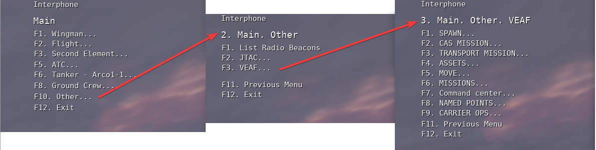
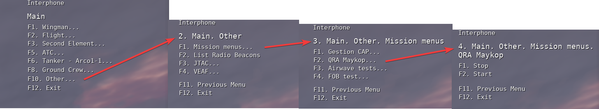

Navigation: page "Mission Maker" du site de documentation VEAF
🚧 TRAVAUX EN COURS 🚧
La documentation est en train d'être retravaillée, morceau par morceau. En attendant, vous pouvez consulter l'ancienne documentation.
Table des matières¶
Introduction¶
Le module Radio permet de gérer les menus radio des scripts VEAF.
Il permet également de créer facilement des menus pour déclencher des actions à la demande, liés ou non à des groupes d'appareils.
Principes¶
Le menu radio de DCS possède une entrée "F10. Other" qui peut être programmée.
On peut y ajouter des menus, qui contiennent d'autres menus, et ultimement des commandes.
Ces dernières peuvent déclencher des actions en exécutant arbitrairement du code dans la mission.
Le module Radio utilise cette entrée pour créer des menus VEAF qui permettent d'interagir avec les scripts. C'est entièrement automatique, dès lors que le module est activé (et il devrait l'être, sans lui les autres scripts risquent de ne pas bien fonctionner).
Exemple - menu radio standard VEAF

C'est le menu radio standard VEAF. On peut également créer facilement des menus et des commandes imbriqués qui permettent au mission maker de déclencher des actions au besoin.
Exemple - menu radio utilisateur

Comment configurer le module¶
Comme d'habitude, ça se passe dans le fichier de configuration de la mission missionConfig.lua, qui est situé dans le répertoire src/scripts de votre mission.
Ce dernier est un fragment de code source LUA qui permet de choisir la manière dont les scripts VEAF sont activés et configurés. Nous vous conseillons d'utiliser Notepad++ ou Visual Studio Code pour l'éditer.
Par défaut, si vous avez utilisé le convertisseur de mission existante pour préparer votre dossier de mission VEAF, il contient déjà la configuration nécessaire.
Sinon, le principe de configuration est simple, il suffit de recopier le code ci-dessous:
if veafRadio then
veaf.loggers.get(veaf.Id):info("init - veafRadio")
veafRadio.initialize(true)
end
Comment configurer un menu radio utilisateur¶
Pour créer un menu radio spécifique et dédié à la mission, il suffit de créer sa structure dans une table LUA, puis d'utiliser la fonction veafRadio.createUserMenu; exemple:
veafRadio.createUserMenu(
{
{"menu", "Mission menus", {
{"menu", "QRA management", {
{"menu", "QRA Maykop", {
{"command", "START", _changeQra, {"QRA-Maykop", "stop"}},
{"command", "STOP", _changeQra, {"QRA-Maykop", "start"}}
}},
{"menu", "QRA Minvody", {
{"command", "START", _changeQra, {"QRA-Minvody", "stop"}},
{"command", "STOP", _changeQra, {"QRA-Minvody", "start"}}
}}
}}
}}
}
, groupId)
Pour simplifier l'écriture et la relecture de cette structure, nous mettons à disposition des fonctions d'aide (mainmenu, menu, command); en les utilisant ça devient plus lisible:
local groupId = nil -- set this to a flight group id if you want the menu to be specific to a flight
veafRadio.createUserMenu(
veafRadio.mainmenu(
veafRadio.menu("Mission menus",
veafRadio.menu("QRA management",
veafRadio.menu("QRA Maykop",
veafRadio.command("START", _changeQra, {"QRA-Maykop", "stop"}),
veafRadio.command("STOP", _changeQra, {"QRA-Maykop", "start"})
),
veafRadio.menu("QRA Minvody",
veafRadio.command("START", _changeQra, {"QRA-Minvody", "stop"}),
veafRadio.command("STOP", _changeQra, {"QRA-Minvody", "start"})
)
)
)
), groupId
)
Il est important de savoir coder un minimum pour définir ce qui va se passer quand le joueur va cliquer sur les commandes de votre menu.
Dans mon exemple, ça va appeler la fonction _changeQra avec pour chaque commande un paramètre différent (par exemple, pour la première commande, {"QRA-Maykop", "stop"}) ; on utilise des accolades pour encadrer les paramètres pour pouvoir en passer plusieurs (ça définit une table).
Il faut donc que cette fonction soit définie, et qu'elle accepte et comprenne vos paramètres.
Le plus simple est de définir sa propre fonction, et d'utiliser l'API des scripts VEAF pour vous aider.
Par exemple, voici le code de la fonction dont on parle:
local function _changeQra(parameters)
local name, startOrStop = veaf.safeUnpack(parameters) -- on extrait les deux paramètres de la table "parameters"
local qra = veafQraManager.get(name) -- on recherche l'object correspondant à la QRA par son nom
if qra then
if startOrStop:upper() == "START" then
qra:start(false) -- on la lance, sans écrire de message
else
qra:stop(false) -- on la stoppe, sans écrire de message
end
end
end
Voici un autre exemple, cette fonction détruit le groupe dont le nom est passé en paramètre (utile pour contrebalancer l'inefficacité relative d'une CAP humaine, par exemple):
local function _destroyGroup(name)
local names = name
if type(name) == "string" then
names = {name}
end
for _, name in pairs(names) do
local _group = Group.getByName(name)
if _group then
_group:destroy()
trigger.action.outText(string.format("Group %s has been destroyed", name), 10)
end
end
end
Et voici comment l'utiliser dans un menu radio:
local groupId = nil -- set this to a flight group id if you want the menu to be specific to a flight
veafRadio.createUserMenu(
veafRadio.mainmenu(
veafRadio.menu("Mission menus",
veafRadio.menu("Destruction d'unités",
veafRadio.menu("CAP ennemie",
veafRadio.command("CAP Maykop", _destroyGroup, "CAP-Maykop"),
veafRadio.command("CAP Minvody", _destroyGroup, "CAP-Minvody")
),
veafRadio.menu("SAM ennemis",
veafRadio.command("SA6 Maykop", _destroyGroup, "SA6-Maykop"),
veafRadio.command("SA10 Minvody", _destroyGroup, "SA10-Minvody")
)
)
)
), groupId
)
Enfin, un exemple qui écrit des drapeaux (flag) pour déclencher des actions dans des triggers du mission editor:
local groupId = nil -- set this to a flight group id if you want the menu to be specific to a flight
veafRadio.createUserMenu(
veafRadio.mainmenu(
veafRadio.menu("Mission menus",
veafRadio.menu("Gestion de flags",
veafRadio.menu("Gérer le drapeau ALPHA",
veafRadio.command("ON", veafSpawn.missionMasterSetFlagFromTable, { "alpha", 1 }),
veafRadio.command("OFF", veafSpawn.missionMasterSetFlagFromTable, { "alpha", 0 })
),
veafRadio.menu("Gérer le drapeau 127",
veafRadio.command("Incrémenter", veafSpawn.missionMasterIncrementFlagValue, 127),
veafRadio.command("Décrémenter", veafSpawn.missionMasterDecrementFlagValue, 127)
)
)
)
), groupId
)
On peut aussi ajouter plusieurs menus, et optionnellement choisir quels menus sont affichés pour un groupe DCS en particulier; utile pour avoir un menu pour tout le monde, et un menu juste pour le mission maker !
Les possibilités sont infinies. N'hésitez pas à me contacter si vous avez des questions !
Contacts¶
Si vous avez besoin d'aide, ou si vous voulez suggérer quelque chose, vous pouvez :
- contacter Zip sur GitHub ou sur Discord
- aller consulter le site de la VEAF
- poster sur le forum de la VEAF
- rejoindre le Discord de la VEAF